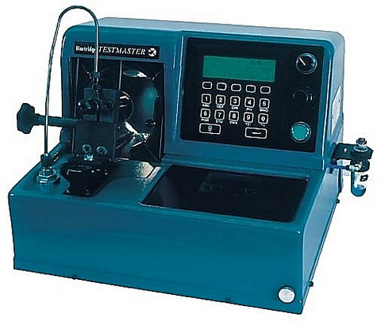

Denso EP-9 típusú, soros rendszerű, mechanikus szabályozású adagoló
Denso EP-9 típusú, soros rendszerű, mechanikus szabályozású adagoló

Denso forgó elosztós, elektronikus szabályozású adagolók láthatók. Balról jobbra: ECD-V3 Toyota, ECD-V5 Opel, ECD-V4 Toyota Land Cruise

Denso HP-3 tipusú Cr nagynyomású szivattyú, bemeneti mennyiség szabályozással. A mögötte lévő képen az első generációs UP-2 tipusú Cr szivattyú metszeti rajza látható
 A Hartridge HH701 típusú egyrugós porlasztó vizsgáló berendezéseEz az egység már elszívó-berendezéssel, világítással is rendelkezik. Digitális kijelzéssel működik. Alkalmas még a porlasztó nyomásveszteségi idő mérésére is.

A képen a Denso U-2P típusú magasnyomású szivattyú próbapadi vizsgálata látható. Ehhez a Hartridge AWM-2PC próbapad és Cr. védőketrece alapfeltétel. Ezen kívül még a védőketrec tetejére helyezett ECD kontroller és a DST-1 kézi teszter szükséges a speciális gyári kiegészítőkkel együtt.